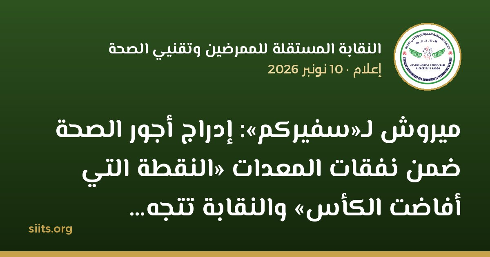

ميروش لـ«سفيركم»: إدراج أجور الصحة ضمن نفقات المعدات «النقطة التي أفاضت الكأس» والنقابة تتجه نحو التصعيد

أثار إدراج أجور موظفي قطاع الصحة ضمن ميزانية «النفقات المختلفة والمعدات»، بدل فصل مستقل ضمن نفقات الموظفين في الميزانية العامة للدولة، موجة غضب داخل القطاع، وذلك في مشروع الميزانية الفرعية لوزارة الصحة والحماية الاجتماعية برسم سنة 2027.
واعتبر عبد الله ميروش، الكاتب الوطني للنقابة المستقلة للممرضين وتقنيي الصحة، في تصريح لموقع «سفيركم»، أن هذا التوجه شكّل «النقطة التي أفاضت الكأس»، مؤكداً أن مكتسبات الموظفين أصبحت مهددة، وأن ذلك يتناقض مع التزامات اتفاق 23 يوليوز 2024.
وحذّر ميروش من أن هذا الوضع قد يمهّد مستقبلاً لتفويت تدبير القطاع إلى الخواص، مؤكداً أن النقابة تتجه نحو التصعيد، وأن الاحتقان داخل القطاع مرشح للعودة بقوة أكبر.
في المقابل، أكد وزير الصحة والحماية الاجتماعية، خلال تقديم ميزانية الوزارة أمام لجنة القطاعات الاجتماعية بمجلس النواب، أن ميزانية 2027 تتضمن إحداث 8000 منصب مالي، منها 2600 منصب للمجموعات الصحية الترابية، فيما شددت الوزارة على أن محضر اتفاق 23 يوليوز 2024 يضمن الحفاظ على صفة الموظف العمومي واستمرار أداء الأجور من الميزانية العامة عبر الخزينة العامة.
غير أن النقابات ترى أن ضمانات الاستقرار لا تكفيها التصريحات، بل يجب أن تنعكس فعلياً في طريقة إعداد الميزانية وتصنيف الأجور، وهو ما ينذر بتجدد التوتر بين الشغيلة الصحية والوزارة ما لم تُقدَّم توضيحات كافية.
فتح في تطبيق النقابة